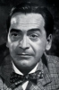
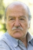

Also known as:La maschera del demonio (original title)
Country:Italy, 86 minutes
Spoken languages:Italian
Genres:Horror
Director(s):Mario Bava
Writer(s):Mario Serandrei, Ennio De Concini
Video Codec:Unknown
Number: 2382


Certification:NR
Storyline:
A vengeful witch and her fiendish servant return from the grave and begin a bloody campaign to possess the body of the witch's beautiful look-alike descendant. Only the girl's brother and a handsome doctor stand in her way.
Cast:  


Medium: Original DVD,
Loaned: No
Aspect ratio: Unknown